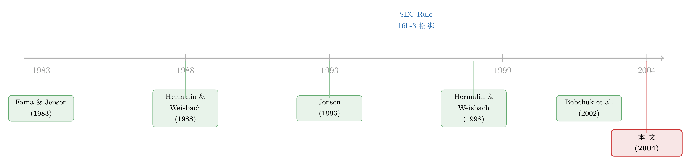

老板的工资条，谁说了算？——一笔藏在董事薪酬里的「监督」暗账
本文读的是 Ryan & Wiggins (2004, Journal of Financial Economics)：董事会给「自己」发的薪酬，并不是一份为了激励监督而精心设计的最优合约，而是董事与 CEO 讨价还价的产物——当 CEO 越强势、董事会越不独立，董事拿到的股权激励就越少，监督的动力也就越弱；更耐人寻味的是，强势的 CEO 在压低董事股权激励的同时，也顺手把自己的薪酬变得对股价更不敏感。一句话：弱董事会与强 CEO，会同时把两份工资条都改写成「对股东不利」的样子。
1 一个被问反了的问题
我们习惯这样讲公司治理的故事：股东把公司交给经理人打理，于是请来一群董事，让他们替股东盯着经理人——这就是 委托代理 (agency) 框架下董事会的天职（Fama and Jensen, 1983）。既然要董事尽心监督，自然要给他们设计一份好的薪酬合约：多发点和股价挂钩的股权，董事和股东的利益就绑在一起了。这是 最优契约 (optimal contracting) 的逻辑，干净、漂亮、教科书式。
可是这个故事里藏着一个被悄悄绕过去的环节：这份「激励董事的合约」，到底是谁拟的？
答案令人尴尬——是董事会自己。董事的薪酬，归根结底是董事和 CEO 坐在同一张桌子上谈出来的。于是问题就被问反了：我们本以为是「股东设计合约去约束董事和经理」，实际上更像是「董事和经理一起商量着给彼此发钱」。本文标题里那句 Who is in whose pocket?（谁在谁的兜里？）问的正是这件事：当董事的报酬要由他本该监督的那个人来拍板，董事究竟还站在股东这一边，还是早就滑进了 CEO 的口袋？
这就是全文反复要讲透的那一个核心：董事薪酬的结构，不是治理的「工具」，而是治理质量的「症状」。 它既由董事会的独立性决定，又反过来塑造董事监督的动力。读懂了这张工资条，你就读懂了这家公司里权力的天平到底偏向哪一边。
2 把「最优合约」换成「讨价还价」
要讲清这件事，先得换一副眼镜。
最优契约的眼镜看到的是：董事会作为一个超然的设计者，为了缓解代理冲突而设定一份最优薪酬。但近年的研究提供了另一副眼镜——讨价还价 (bargaining)。Hermalin and Weisbach (1998) 把董事的遴选和 CEO 的薪酬建模成 CEO 与董事会之间的一场谈判；Bebchuk, Fried, and Walker (2002) 更直接地提出 经理人权力假说 (managerial power hypothesis)：CEO 对董事会的权力会系统性地扭曲薪酬合约，而现实里的种种证据，其实更像讨价还价模型、而非最优契约模型的产物。
本文的贡献，是把这副眼镜架到了一个此前少有人看的对象上——董事自己的薪酬。作者的推理链条很朴素，却很锋利：
首先，谁在谈判桌上更有底气，谁就能把薪酬的「大小」和「结构」朝着对自己有利的方向掰。
接着，一个自然的问题是：董事的底气从哪来？答案是 董事会的独立性本身。沿用 Hermalin and Weisbach (1998) 的逻辑，作者立了两条支柱：(i) 董事会的独立性，是董事相对 CEO 拥有谈判优势的结果；(ii) 越独立的董事会越愿意监督，因为 CEO 越难对独立董事「下手」——你越独立，CEO 就越拿不住你能不能连任、能不能再去别的公司挂个董事席位这些事。
然后，反过来：当 CEO 在董事会里坐大——比如他任期很长、根基深厚（即所谓 entrenched，「盘踞型」CEO），又比如他同时兼任董事长（CEO/chair duality），或者董事会里塞满了内部人、董事会规模大到开不成一次坦诚的会（Lipton and Lorsch, 1992; Jensen, 1993）——天平就倒向了 CEO 这一边。
这里的因果方向要小心。作者并不声称是「薪酬导致了独立性」。他们明确承认，董事会独立性、经理人权力、薪酬这三者，和公司金融里大多数变量一样，是长期内生地一起决定的。他们的辩护是：在董事会设定当年薪酬政策时，董事会的各项特征是预先确定 (predetermined) 的。所以「薪酬结构」与「董事会特征」之间的关系，刻画的是一个均衡结果，而这个均衡恰好给了我们一个检验治理假说的窗口。
于是核心的可检验命题就出来了：如果董事薪酬是讨价还价的产物，那么在那些 CEO 占上风、董事会不独立的公司里，董事应当拿到更少的股权激励——监督的动力被人为地调低了。 反之，独立的董事会能为自己争取到更贴近股价表现的报酬。
3 一把好用的「自然实验」钥匙：Rule 16b-3
光有横截面的相关性还不够过瘾。本文真正巧妙的一步，在于它抓住了一个时间上的契机。
1996 年，美国证券交易委员会 (SEC) 放松了 Rule 16b-3。这条修订做了一件关键的事：取消了董事薪酬计划和公式化授予必须经股东批准的要求，等于把更多的自由裁量权直接交还给了董事和 CEO 自己。
这把钥匙妙在哪里？因为它正好制造了一个「权力松绑」的冲击。规则放松之前，股东这道闸门多少还拦着一点；放松之后，谈判桌上的强势方可以更随心所欲地安排薪酬。于是我们可以问一个干净的问题：当束缚被解开，人们是用这份新自由去强化监督激励（多发股权），还是反过来削弱它？ 如果是后者，那就坐实了代理冲突正在侵蚀董事会的治理功能。
正因如此，作者把镜头对准两个时点：放松后的第一年 1997 年（做横截面分析），以及横跨规则变动的 1995 年（前一年）到 1997 年（后一年）的变化。后者尤其重要——看「变化」而非「水平」，能在相当程度上把那些不随时间变的公司固定特征差掉，从而离「松绑这件事本身的效果」更近一步。
4 数据：1,018 家公司的工资条
数据来自三处拼合：董事薪酬来自标普的 ExecuComp（覆盖 S&P 500、Midcap 400、Smallcap 600）；董事会规模与构成、董事关联关系、CEO 任期、CEO 是否兼任董事长，逐一手工取自各公司的 委托书 (proxy statements)；财务与会计数据来自标普的 Research Insight。三套数据都齐全的公司，最终得到 1,018 家（1997 年），变化分析的子样本为 600 家。
观测单位是「公司层面的董事薪酬」。薪酬被拆成现金（年度固定费 + 每次开会的出席费）与股权（限制性/非限制性股票按上一财年收盘价计值，期权用修正的 Black-Scholes 模型按平价、十年期假设计值）两块。
几个能帮你建立画面感的数字：样本公司董事会平均 9.23 名董事（中位数 9）；外部董事平均占 47.92%，灰色董事（gray directors，指为公司提供金融、咨询、法律等服务、因而存在利益冲突的非内部人）占 24.82%，内部董事占 27.26%；CEO 平均任期 9.11 年（中位数仅 6 年）；高达 68.76% 的 CEO 同时兼任董事长，17.98% 的 CEO 出自创始家族。
薪酬本身呢？董事总薪酬平均 $110,995，其中现金 $25,664（占 49.95%），股权 $85,330（占 50.05%）——现金与股权大致五五开。但平均数被少数巨额授予拉高了：总薪酬中位数只有 $56,194。约 81% 的公司会给董事发股票或期权，63% 发期权，32% 发股票。
5 主要结果：天平偏向谁，工资条就改写成什么样
5.1 横截面——四道「监督障碍」，四次印证
作者用 差异均值检验 (difference-in-means tests) 先做了一轮干净的单变量比较，沿着四个独立性维度切样本：董事会规模、董事会构成、CEO 任期、CEO 是否兼任董事长。
董事会规模是最锋利的一刀。大董事会（董事数多于样本中位数 9）协调成本高，CEO 因此更容易坐大。结果完全符合预期：大董事会的董事拿到 $30,965 现金（占总薪酬 55.4%），而小董事会只拿 $22,219（46%）；反过来，小董事会的董事拿到 $101,450 股权（54%），大董事会只有 $60,521（45%）——两组差异都在 0.01 水平上显著。也就是说，董事会越大、CEO 越强势，发给董事的薪酬就越偏现金、越少股权，监督激励被悄悄抽走了。而且小董事会董事的总薪酬也更高（$123,670 vs $91,487），这与「谈判中占优者能为自己多争」的图景完全吻合。
CEO 任期讲了同一个故事的另一面。盘踞型（长任期）CEO 治下的公司，董事拿到的总包更小，更要命的是股权占比更低，而且更不容易拿到任何股权激励——盘踞型 CEO 公司里发放股权的比例只有 75.65%，而短任期组高达 86.37%。内部董事多的董事会，同样更难拿到股权。
这些结论在剔除创始家族控制的公司（剩 835 家）后依旧稳健，也经受住了按行业特征、成长机会、公司规模、CEO 与董事会人口学特征做的一系列控制。换句话说，这不是「大公司碰巧爱发现金」之类的混淆能解释掉的。
（关于「强势 CEO 会把公司治理拖向何方」，可一并参见《老板说了算的公司，业绩为什么忽好忽坏？》。）
5.2 CEO 自己的工资条，露了另一个马脚
到这里，故事本可以收尾了。但真正让我觉得这篇论文「狠」的，是它接着把 CEO 自己的薪酬也拉进来对照。
作者发现，那些刻画董事会独立性与经理人权力的代理变量，同样能解释 CEO 薪酬结构相对「行业 + 董事薪酬」预测值的偏离：盘踞型 CEO、以及董事会缺乏独立性的公司里，CEO 自己的股权激励也更少。
于是反转出现了：强势的经理人是在两头同时下手——一手压低董事的股权激励，让监督者失去盯着股价的动力；另一只手又把自己的薪酬变得对股价更不敏感，给自己卸下业绩压力。这不是巧合，而是同一种权力在两份工资条上留下的同一个指纹。董事和 CEO，确实可能一起待在彼此的口袋里。
5.3 松绑之后：自由被用来「削弱」激励
最后是那把自然实验钥匙转动后的结果。1995→1997，董事总薪酬平均暴涨了 64%；其中现金只涨了 6%，而股权激增 58%。这股股权热潮并非单纯由股价上涨吹起来的——有近 45% 的公司增加了授予的股票与期权份数，更有近 18% 的公司一边加股权、一边减现金，实打实地完成了「以股权换现金」的结构性切换。
可关键的问题始终是：谁没有跟上这股浪潮？答案精准地回到了核心命题：内部董事多的公司、CEO 盘踞的公司、以及 CEO 兼任董事长的公司，更不愿意提高股权授予的比例，也更不愿意用股权去替换现金。 松绑给了所有人自由，但弱治理的公司选择了用这份自由去回避——而非拥抱——更强的监督激励。
6 文献脉络
把这篇论文放回它生长的那片土壤，线索其实很清晰。
源头是 Fama and Jensen (1983) 奠定的代理框架：所有权与控制权分离，于是需要董事会去监督经理人。沿着这条线，一支文献去问「什么样的董事会更有效」——Weisbach (1988) 发现外部董事越多、业绩差时 CEO 越容易被换掉；Jensen (1993)、Lipton and Lorsch (1992) 提出董事会越大越无效；Yermack (1996) 给出了董事会规模与 Tobin's Q 负相关的经典证据；Eisenberg, Sundgren, and Wells (1998) 在小公司里印证了同样的负相关。另一支文献则追问「董事会本身是怎么来的」——Hermalin and Weisbach (1998) 的内生董事会模型是枢纽：董事会效能会随 CEO 任期增长而衰减，CEO 提名的新董事因感激而失去独立性；Shivdasani and Yermack (1999) 用 CEO 介入董事遴选的证据为这套机制添了砖。

到了世纪之交，Bebchuk, Fried, and Walker (2002) 把「经理人权力扭曲薪酬」明确地立成了与最优契约分庭抗礼的范式。与此同时，研究者开始把目光投向董事薪酬本身：Perry (2000) 发现给外部董事更多激励薪酬，业绩差时换 CEO 更果断；Brick, Palmon, and Wald (2002) 在董事与经理「双双过度领薪」中读出了 任人唯亲 (cronyism)；Maug (1997) 则从理论上论证了用股或期权付董事能改善其激励。Ryan and Wiggins (2004) 站在这一交汇点上，做了此前无人做过的事：把董事薪酬的结构，直接和董事会独立性、经理人权力对接起来检验，并借 Rule 16b-3 的松绑制造了一个观察「变化」的天然窗口。
7 评论与延伸（Q&A + 研究方向）
(a) 几个可能的疑问
Q：这篇文章到底有没有「识别」出因果？还是只是相关性？
坦白说，更接近后者。作者自己也很诚实——他们把结论定位为「均衡结果」，而非因果效应。最强的因果论证来自 Rule 16b-3 这个时间冲击下的「变化」分析，它能差掉公司固定特征。但这仍是一个对所有公司同时生效的政策，没有真正的对照组，无法排除 1995–1997 间宏观、股市与其他治理潮流的共同搅动。把它当成一份高质量的「描述性 + 准自然实验」证据来读，最稳妥。
Q：「股权占比低 = 监督动力弱」，这个等号下得是不是太快了？
这是全文最该被追问的一处。文章把「股权激励」直接等同于「监督动力」，但董事的监督还来自声誉、法律责任、被诉风险等许多股权之外的力量（参见《炒掉 CEO，董事是英雄还是「帮凶」？》里董事声誉的角色）。作者的辩护是 Maug (1997) 的理论与 Perry (2000) 的实证都支持「股权→监督」这条链，但严格说，本文测的是薪酬结构，监督行为本身是被推断出来的，并未直接观测。
Q：会不会是「公司规模」在背后捣鬼——大公司既董事会大、又爱发现金？
这是最自然的混淆，作者也专门防了它。他们控制了公司规模、成长机会、行业特征、CEO 与董事会的人口学变量后，核心结论依旧成立。不过「大董事会更可能发放股权」这一条反常的单变量结果，作者明确归因于薪酬结构与公司规模的关系，提示规模的影响确实存在、需要小心。
Q：灰色董事 (gray directors) 为什么要单列出来？
因为他们是「形似独立、实则不独立」的典型。灰色董事是为公司提供金融、咨询、法律服务的非内部人——他们能从公司拿到服务费，因而存在利益冲突，监督时未必硬气。作者在定义「外部董事过半」的独立董事会时，特意把灰色董事排除在「外部」之外，正是为了不让这层伪装污染独立性的度量。
Q：Rule 16b-3 放松后股权大涨 58%，会不会只是 1990 年代末的股市牛市把期权价值吹起来了？
作者预判了这个质疑并正面回应：股权激增并非单纯来自股价。证据是「份数」层面的变化——
45%的公司增加了授予的股票/期权份数，18%的公司在加股权的同时减少现金。份数和「股权换现金」的结构切换不受股价高低影响，因此这股潮流是真实的制度反应，而不仅是估值幻觉。
Q：这对当下的治理监管有什么含义？
直接得很。文章写作时，纽交所与纳斯达克正提议限制董事对薪酬的影响、要求所有股权薪酬计划经股东批准——这恰好是 Rule 16b-3 松绑的逆操作。本文的证据为这类提案背书：当把自由裁量权交给谈判桌上的强势方，弱治理公司会拿它来回避监督激励，所以让股东重新握住这道闸门是有道理的。
(b) 几个可能的研究问题与提案
1）董事股权激励，会传导到公司债的定价里吗？
【经济故事】董事监督的强弱不只关乎股东，也关乎债权人——一个被 CEO「装进口袋」的董事会，更可能纵容损害债权人的风险转移。如果董事股权激励是监督强度的代理变量，那么董事股权占比低的公司，其新发公司债的信用利差是否更高？这把「治理→信用风险」的链条接到了债券市场（相关思路可参见《股东说了算，债主就要遭殃吗？》）。
【可行性】中。董事薪酬数据可沿用
ExecuComp/ 委托书；债券利差可用 TRACE + Mergent FISD。难点在识别：需要找到一个像 Rule 16b-3 这样外生地改变董事激励的冲击，否则又会落回内生性的老问题。
2）外资持有人会不会改变这场讨价还价的天平？
【经济故事】本文的谈判框架里只有董事与 CEO 两方。但当一家公司被大量外国机构投资者持有时，这些「远方的股东」往往更看重独立性、更倾向于推动股权激励。引入外资持股比例，董事薪酬的结构会不会朝着「更独立」的方向移动？这是把外资持有人作为治理外生推手的一次检验。
【可行性】中到高。外资持股可由 FactSet / 13F 与各国持股数据库构建，跨国样本更佳。识别上可借助指数纳入（如 MSCI 重新分类）带来的被动外资流入作为工具变量，绕开「好公司吸引外资」的反向因果。
3）当董事薪酬披露被「逐字」机器读取，能否量出谈判的痕迹？
【经济故事】委托书里关于薪酬如何确定的措辞，可能泄露谈判的语气——是「薪酬委员会独立决定」还是「与 CEO 协商」。用大语言模型逐句解析这些文本，构造一个「董事话语权指数」，再看它能否预测股权激励占比，等于给本文的「讨价还价」机制找一个直接的、文本层面的度量。
【可行性】中。委托书全文可从 SEC EDGAR 批量获取，文本解析技术已成熟；难点是构造的指数缺乏「金标准」来验证，需要人工标注子样本来校准。
4）Rule 16b-3 之后，那些「以股权换现金」的公司，长期治理表现真的更好吗？
【经济故事】本文止步于「谁切换了薪酬结构」，但没回答「切换之后怎么样」。把 1997 年完成「股权换现金」的公司追踪 5–10 年，看它们日后 CEO 因业绩被替换的概率、以及运营/股价表现是否更优，能把「薪酬结构」与「真实监督效果」之间那个被推断的等号，变成可观测的检验。
【可行性】高。数据基本现成（ExecuComp 长面板 + CRSP/Compustat），可用差异中的差异比较「切换组」与「未切换组」的后续表现，是一个 doable 的扩展。
8 我的判断与参考文献
贡献。 这篇文章最漂亮的地方，不在某个惊人的系数，而在它问对了问题：当所有人都盯着「董事如何给经理发薪」时，它转身去看「董事如何给自己发薪」，并由此把董事薪酬从治理的「工具」重新定义为治理的「症状」。再配上 Rule 16b-3 这把时间钥匙，以及「CEO 自己的薪酬也同步变弱」这记漂亮的对照，整篇文章把「弱董事会 + 强 CEO → 双双弱化股价敏感度」这一个核心讲得既清楚又有力。在它之前，没有人把董事薪酬结构和董事会独立性直接对接起来——这份「第一」是扎实的。
对识别的担忧。 最大的软肋仍是内生性。董事会独立性、经理人权力、薪酬三者长期共同决定，本文的「预先确定」辩护只能缓解、不能根除这个问题。Rule 16b-3 的变化分析是亮点，但它缺乏对照组，无法把「松绑效应」从同期其他治理与市场潮流中干净地剥离。此外，「股权占比低 = 监督弱」这个核心等号是被推断的，而非被观测的——文章测的是薪酬，不是监督行为本身。
后续想看到什么。 我最想看到的，是把这条链条的「下游」补上：那些被压低了股权激励的董事会，日后是否真的更少在业绩变差时炒掉 CEO、更少否决坏的并购？把薪酬结构与可观测的监督行为对接，才能让「症状」真正坐实为「病因」。其次，我很期待外资持有人或被动指数资金作为外生治理推手，被引入这场讨价还价——这既能改善识别，也把公司治理与全球资本流动这条更大的暗线连了起来。
参考文献
- Bebchuk, L., Fried, J., Walker, D. (2002). Managerial power and rent extraction in the design of executive compensation. University of Chicago Law Review 69, 751–846.
- Brick, I., Palmon, O., Wald, J. (2002). CEO compensation, director compensation, and firm performance: evidence of cronyism. Working Paper, Rutgers University.
- Eisenberg, T., Sundgren, S., Wells, M. (1998). Larger board size and decreasing firm value in small firms. Journal of Financial Economics 48, 35–54.
- Fama, E., Jensen, M. (1983). Agency problems and residual claims. Journal of Law and Economics 26, 327–349.
- Hermalin, B., Weisbach, M. (1988). The determinants of board composition. Rand Journal of Economics 19, 589–606.
- Hermalin, B., Weisbach, M. (1998). Endogenously chosen boards of directors and their monitoring of the CEO. American Economic Review 88, 96–118.
- Jensen, M. (1993). The modern industrial revolution, exit, and the failure of internal control systems. Journal of Finance 48, 831–880.
- Lipton, M., Lorsch, J. (1992). A modest proposal for improved corporate governance. Business Lawyer 48, 59–77.
- Maug, E. (1997). Boards of directors and capital structure. Journal of Corporate Finance 3, 113–139.
- Perry, T. (2000). Incentive compensation for outside directors and CEO turnover. Working Paper, Arizona State University.
- Ryan, H. E., Wiggins, R. A. (2004). Who is in whose pocket? Director compensation, board independence, and barriers to effective monitoring. Journal of Financial Economics 73(3), 497–524.
- Shivdasani, A., Yermack, D. (1999). CEO involvement in the selection of new board members: an empirical analysis. Journal of Finance 54, 1829–1853.
- Weisbach, M. (1988). Outside directors and CEO turnover. Journal of Financial Economics 20, 431–460.
- Yermack, D. (1996). Higher market valuation of companies with a small board of directors. Journal of Financial Economics 40, 185–211.